Projetos
Mais de 50.000 cidadãos foram qualificados em programas e projetos
desenvolvidos a partir de Itinerários Formativos Wilivro – conjunto de cursos
ministrados de forma sequencial para atingir objetivo específico de formação profissional – tais como:
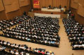 JEP – Jovem Empreendedor da Escola Pública
Objetiva proporcionar aos alunos do Ensino Médio das escolas públicas, via internet e utilizando a tecnologia Wilivro, inclusão digital, qualificação em empreendedorismo e plano de negócio. Os alunos que apresentam os melhores planos recebem prêmios e financiamento de microcrédito para a montagem do próprio negócio.
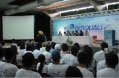 Projeto Bem Receber
Objetiva qualificar via Internet, utilizando a tecnologia Wilivro, profissionais que estão atuando no atendimento direto ao turista, com total flexibilidade de horário, usando o computador da empresa, pessoal ou de telecentro público. O Itinerário Formativo é constituído dos cursos: Inclusão Digital, Cidadania, Turismo, Empreendedorismo e Qualidade no Atendimento.
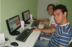 Projeto Renda+
Objetiva proporcionar a elevação da renda das famílias participantes do programa Bolsa-Família através da qualificação, via Internet e utilizando a tecnologia Wilivro, nos telecentros das comunidades. O programa é voltado à inserção no mercado de trabalho ou exercício de atividade produtiva que gere renda. Itinerário Formativo é constituído dos cursos: Inclusão Digital, Cidadania, Qualidade no Atendimento e Preparação para o Emprego.
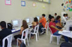 Emprego Jovem
Objetiva proporcionar aos jovens de baixa renda, nos telecentros comunitários, cursos Wilivro visando a inclusão digital, a formação e o aperfeiçoamento profissional. O cidadão pode fazer os cursos individualmente, para atender necessidades específicas, ou o conjunto de cursos, na forma de Itinerário Formativo, para obter a qualificação profissional.
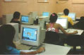 Programa Primeiro Passo Jovem Bolsista
Objetiva proporcionar a formação básica, constituída da Inclusão e Letramento Digital, Cidadania e Preparação para o Emprego. É ministrado presencialmente e via Internet, utilizando tecnologia Wilivro, como módulo inicial da capacitação de jovens que aprenderão um ofício para acesso ao mercado de trabalho ou exercício da atividade de profissional autônomo.
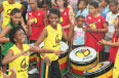 Olodum Digital
O Wilivro está desenvolvendo para a Associação Carnavalesca Bloco Afro Olodum – Escola Olodum – Itinerário Formativo constituído dos cursos de Teoria Musical, Diversidade Étnica e Percussão.
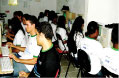 Programa EnterJovem
Programa financiado pela Agência Norte-americana para Desenvolvimento Internacional que visa capacitar jovens e ampliar suas oportunidades para o mercado de trabalho. Utiliza cursos Wilivro no módulo voltado à capacitação em empreen- dedorismo e formação para mercado de trabalho.
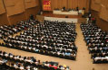 JEP – Jovem Empreendedor da Escola Pública
Objetiva proporcionar aos alunos do Ensino Médio das escolas públicas, via internet e utilizando a tecnologia Wilivro, inclusão digital, qualificação em empreendedorismo e plano de negócio. Os alunos que apresentam os melhores planos recebem prêmios e financiamento de microcrédito para a montagem do próprio negócio.
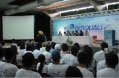 Projeto Bem Receber
Objetiva qualificar via Internet, utilizando a tecnologia Wilivro, profissionais que estão atuando no atendimento direto ao turista, com total flexibilidade de horário, usando o computador da empresa, pessoal ou de telecentro público. O Itinerário Formativo é constituído dos cursos: Inclusão Digital, Cidadania, Turismo, Empreendedorismo e Qualidade no Atendimento.
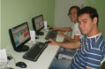 Projeto Renda+
Objetiva proporcionar a elevação da renda das famílias participantes do programa Bolsa-Família através da qualificação, via Internet e utilizando a tecnologia Wilivro, nos telecentros das comunidades. O programa é voltado à inserção no mercado de trabalho ou exercício de atividade produtiva que gere renda. Itinerário Formativo é constituído dos cursos: Inclusão Digital, Cidadania, Qualidade no Atendimento e Preparação para o Emprego.
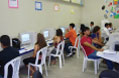 Emprego Jovem
Objetiva proporcionar aos jovens de baixa renda, nos telecentros comunitários, cursos Wilivro visando a inclusão digital, a formação e o aperfeiçoamento profissional. O cidadão pode fazer os cursos individualmente, para atender necessidades específicas, ou o conjunto de cursos, na forma de Itinerário Formativo, para obter a qualificação profissional.
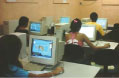 Programa Primeiro Passo Jovem Bolsista
Objetiva proporcionar a formação básica, constituída da Inclusão e Letramento Digital, Cidadania e Preparação para o Emprego. É ministrado presencialmente e via Internet, utilizando tecnologia Wilivro, como módulo inicial da capacitação de jovens que aprenderão um ofício para acesso ao mercado de trabalho ou exercício da atividade de profissional autônomo.
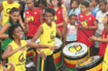 Olodum Digital
O Wilivro está desenvolvendo para a Associação Carnavalesca Bloco Afro Olodum – Escola Olodum – Itinerário Formativo constituído dos cursos de Teoria Musical, Diversidade Étnica e Percussão.
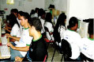 Programa EnterJovem
Programa financiado pela Agência Norte-americana para Desenvolvimento Internacional que visa capacitar jovens e ampliar suas oportunidades para o mercado de trabalho. Utiliza cursos Wilivro no módulo voltado à capacitação em empreen- dedorismo e formação para mercado de trabalho.